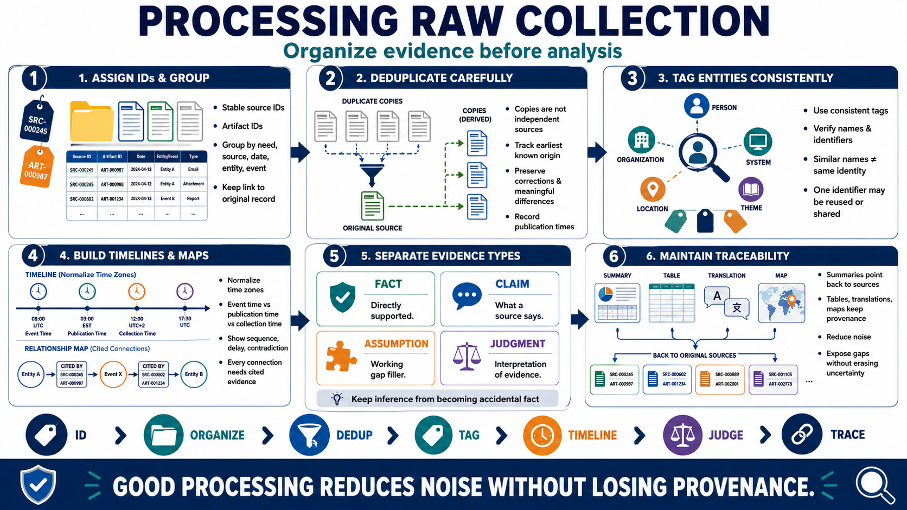

Organize and Process Findings
Connecting to LMS... Progress: in progress

Narration
Raw collection needs processing before reliable analysis. Start by assigning stable identifiers to sources and artifacts. Group material by information need, source category, date, entity, or event while preserving the link to the original record.
Deduplicate carefully. Multiple pages may repeat one original claim, and treating them as independent sources creates false confidence. Track the earliest known origin and relationships among copies. Preserve meaningful differences, corrections, and publication times.
Use tags consistently for entities, locations, systems, organizations, and themes. Entity extraction can accelerate organization, but names and identifiers require verification. Similar names do not prove the same identity, and one online identifier may be reused, shared, or reassigned.
Timelines reveal sequence, delay, and contradiction. Normalize time zones and distinguish publication time from event time and collection time. Relationship maps can show documented connections, but every edge should cite evidence and describe what the connection actually means.
Separate facts, source claims, assumptions, and analytical judgments. A fact may be directly supported by a reliable record. A claim is what a source says. An assumption fills a working gap. A judgment interprets evidence. Keeping these categories visible prevents inference from becoming accidental fact.
Maintain traceability through processing. Summaries, tables, translations, and visual maps should point back to source identifiers and preserved context. Processing is successful when it reduces noise and exposes gaps without erasing provenance or uncertainty.